Hi all,
This week I had the pleasure of sitting down with Ben Norland, Ben is a stand out SportsVizSunday contributer as well as being recognised more recently as a Tableau featured author. Bens ability to show great stories, whilst incorporating technical charts and impressive design has really caught my eye. We sat down to chat a little more about where this passion comes from and some of the tips and tricks behind some of his visuals.
Check his profile out here.CJ: Ben, thanks for joining. For those that are unaware, May you tell us a little about how you ended up in the world of data? When did the passion for Tableau ignite, was it at Indeed or prior?
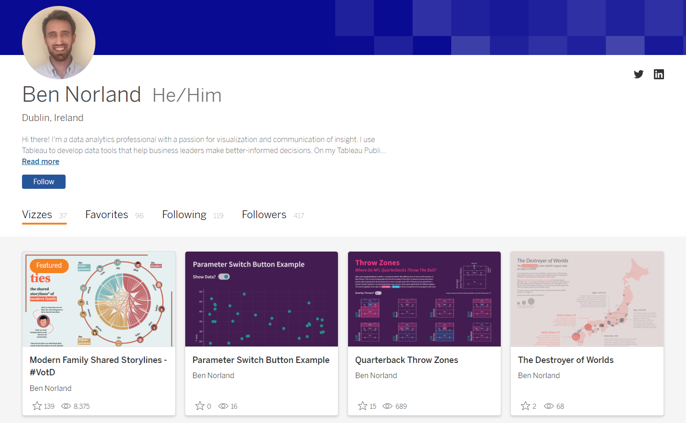
B: Thanks for having me, CJ! This blog is one of my regular go-to sites for inspiration, so to be asked to contribute is a real privilege!I’ve been working with Tableau for about 3 years, initially at Deutsche Bank and then at Indeed. But I’ve been in data-focused roles for about 8 years now. While my academic background wasn’t data-related at all, I discovered pretty early on in my career that I really enjoyed building tools in Excel that surfaced data insights more easily. Around the same time, I read Moneyball and became fascinated with the idea of using data to get a performance edge. That drove me to learn R, SQL, and eventually Tableau, and I now use all 3 on a daily basis to build data tools that help drive better-informed decision making.Away from the day job, I’ve developed a real love for Tableau Public and the DataFam community - I’ve drawn so much inspiration from it over the past few years, and I’ve taken a lot of joy from becoming a more active member of the community this year.CJ: Are your favourite sports to visualise the same as the ones you follow? I see your profile considers 4 or 5 different sports. Do you have many go-to resources when it comes to sports analytics data? It’s nice to see, you always add in an external link to the data!
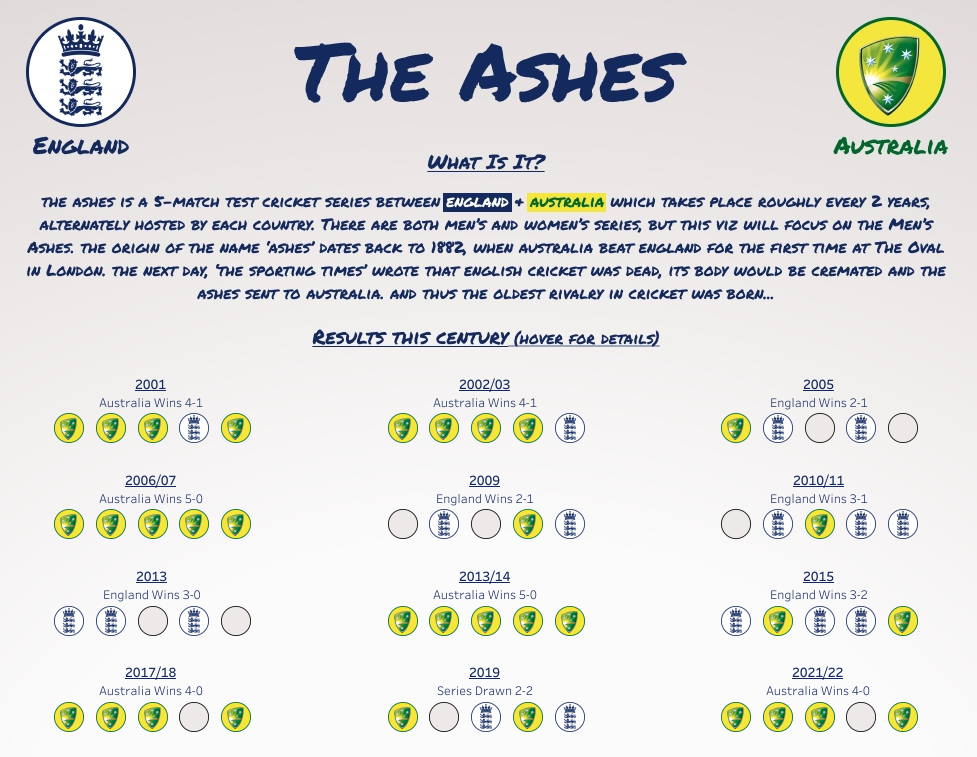
B: Yes, it would definitely seem that way, although it’s not entirely intentional! I’m a huge football (soccer) fan, so I tend to cover that more than any other sport, but I also follow F1 and cricket closely, and have always had an interest in American sports too. I think sports in general are such rich sources of data, and there’s always an interesting angle to explore, be it simply learning more about a sport for yourself, or using data to challenge popular narratives. A recurring theme in the DataFam is ‘viz what you love’ - that is absolutely the case for me and why I repeatedly gravitate towards sports vizzes!In terms of data sources, Kaggle is my go-to for finding interesting datasets (my Premier League Ever-Presents, NFL, NBA and F1 vizzes, amongst others, are all based on datasets found on Kaggle) - whatever topic you have in mind, you’re pretty much guaranteed to find a relevant dataset on there. But I’ve also used data from the likes of fivethirtyeight, the worldfootballR R package, and StatsBomb in the past.I like to build self-serve tools that address questions I have, but that also might address different questions for others. With that in mind, I always like to add a link directly to the data - if I haven’t answered their question, perhaps a viewer might want to go and dig in for themselves, or publish their own related viz. URL actions in Tableau are great for this purpose - my approach is as follows:
Open a new worksheet and name it ‘Data Link’
Double click on the ‘Marks’ panel and type ‘’ in the pill that appears
Change the mark type to ‘Shape’ in the dropdown, and select a relevant shape (I have a ‘link’ shape that I tend to use)
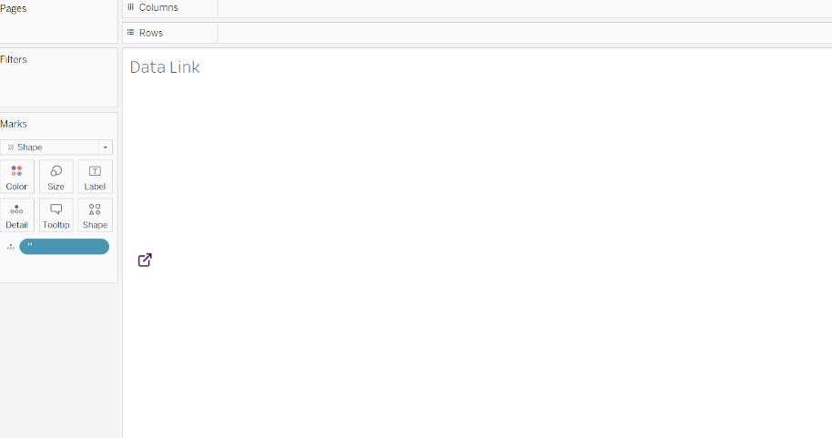
Add this worksheet to your dashboard and position/resize accordingly
In the ‘Dashboard’ menu, select Actions -> Add Action -> Go to URL
Ensure your ‘Data Link’ worksheet is selected, and that ‘Run Action On’ is set to ‘Select’. Then add the URL for your data source. Now your users will be sent to the datasource if they click on that area of the board!
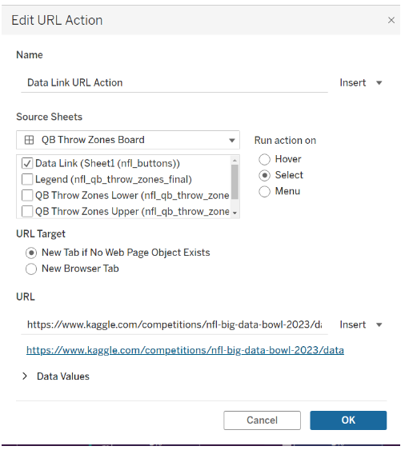
There are almost certainly other ways to do this, but I like that this allows you to use a shape/image that can also be formatted to match your dashboard style, and offers a familiar, intuitive user experience.CJ: When we caught up previously you mentioned how you set yourself a goal of building out your portfolio while on paternity. What new chart types or styles are you hoping to tick off in the remainder of the year? Can you explain a bit more about how you’ve gone about this?B: Yes - my wife and I welcomed our second child earlier this year, and I’ve been very lucky to have quite a long period of paternity leave this time round. While chasing around after two young kids has occupied most of this time, I wanted to make sure I also used some of it to build out my Tableau Public portfolio, partly so I didn’t forget everything while away from work(!), and partly to push myself to learn new chart types and improve my design skills.Areas of focus have included Map Layers (I know, I was a little slow on the uptake…!), Chord Charts, Curved Bump Charts, and improving my understanding & usage of Polygons. I’ve also spent a good bit of time working on design elements in Figma - I tend to build backgrounds for my dashboards there, add them as images in Tableau, and then layer my charts over the top. Combining Figma with Tableau has a number of advantages, but one thing I particularly like is that it allows you to get around some of the challenges with publishing fonts to Tableau Public/Tableau Server - many fonts don’t render well when published directly in Tableau, but you don’t encounter the same issues when they’re embedded in a background image, so you know viewers will see the final version in the way you intended.CJ: You are an avid R coder, how has learning how to code helped you with transforming data for some of your sports visualizations? Do you tend to use R for retrieving, cleaning, or transforming data?
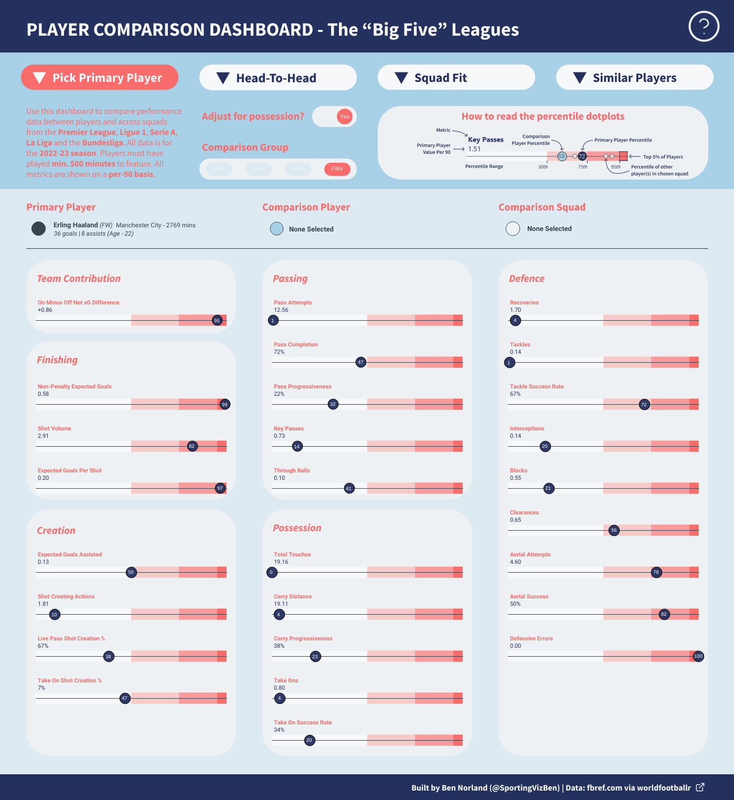
B: I love how much control R gives you over transforming and analysing data. I use it for pretty much everything - from connecting to data (either via individual files, larger databases, or in some cases via specific R packages that contain data themselves), doing exploratory analysis, cleaning and transforming, joining or merging datasets, and prepping the output for Tableau.A good example is my Player Comparison Dashboard. While the underlying data is available via worldfootballR, I needed to build an R script to ingest that data, join multiple files together, make adjustments so that all metrics are shown on a per-90-minute basis and can be re-scaled based on team possession, calculate each player’s percentile rank for each metric, and pivot the data from wide to long to make it easier to work with in Tableau.In theory you could do a lot of that work in Tableau itself, but I find R gives me more control over these elements (it’s easier to review the data after each step and isolate any bugs, for example), and then I can output a file that is much closer to the final version that Tableau needs, which is often helpful from a performance perspective. I know that coding in R (or Python) can seem intimidating if you haven’t done it before, but I would really recommend trying it. About 80% of what I do in R uses a few core functions and techniques that can be learned quite easily, and will give you outsized benefits in terms of productivity. I would recommend starting with the Tidyverse - this group of packages will give you a fantastic set of tools for connecting to, cleaning, transforming and analysing datasets. And if you have SQL experience, the syntax should seem pretty familiar.CJ: Your Quarterback throw zone and your super clutch NBA visuals are a thing of beauty. Can you talk about the thought process behind your small multiple format to be able to add in extra details like jersey number or team name? What considerations go into the overall framing when you need a detailed key to go alongside the visual?
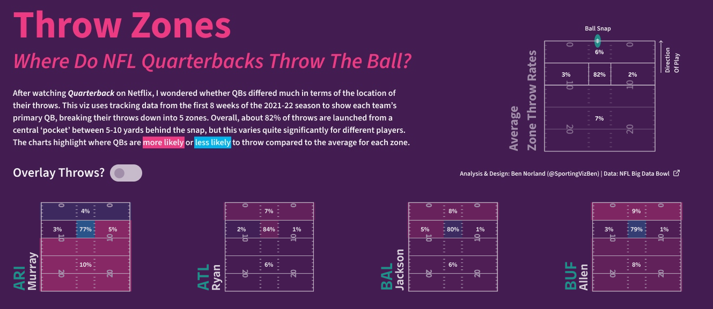
B: I’m a big fan of small multiples because they allow you to show data through many different lenses within the same viz - be that change over time, entity by entity, or in the case of these two examples, performance differences between players. I must confess, though, that every time I build a small multiple, I find myself going back to the same guide to remind myself of the calcs - they just don’t stick in my head! I tend to use Kevin Flerlage’s calcs for this, but Andy Kriebel also has a very similar approach. With the NFL and NBA vizzes, I’ve combined small multiples with map layers to add in those extra details. Before I worked with Tableau, I used to do a lot of viz work in R’s ggplot2 package, which is fantastic for layering element upon element. It actually frustrated me initially that this was quite difficult to do in Tableau, but map layers are an absolute game-changer in terms of enabling that. It can seem like a bit of a strange concept at first - literally transforming your data into lat-lon coordinates to enable this - but it’s so effective. Luke Stanke has a brilliant guide, and explains this far more elegantly that I could, but for anyone unfamiliar with the concept, in a nutshell it involves scaling all of your data on both your x and y axes (let’s say we’re scaling from 0 to 1 in both cases), and then turning each point into coordinates using Tableau’s MAKEPOINT() function. Then, because you know your data won’t go above 1 or below 0, you’re free to use the space outside of this to place additional information. Take my NFL Throw Zones as an example: if I know that my X and Y axes both start at 0, I could use an additional map layer to place a team name label at MAKEPOINT(-0.25, 0.00). And you can use as many layers as you like for this purpose (though be wary of cluttering your viz!).For the keys, I like to use them to provide additional information or context in a way that minimizes clutter elsewhere in the viz. In the NFL viz, the key is used to highlight two important pieces of information: the boundaries of, and average throw rates for, each throw zone. Highlighting them here removes the need to include that information within the small multiples.
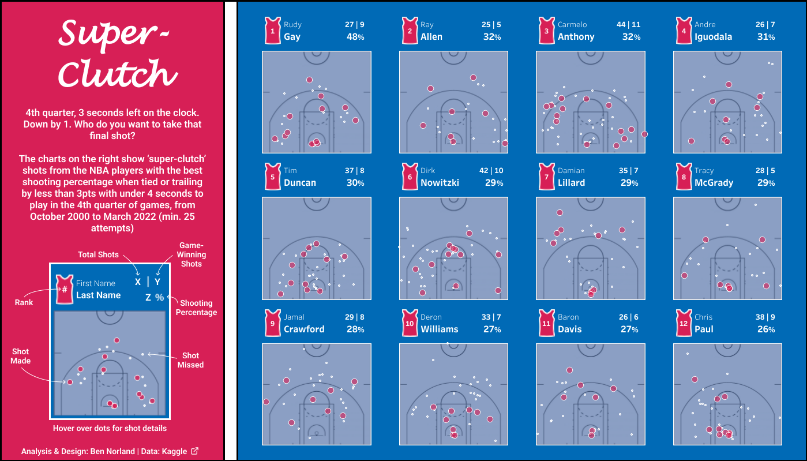
Similarly, in the NBA viz, the charts contain quite a lot of information, and adding labels within the small multiples would create a lot of clutter, but moving all of this information to the key means the user can still understand what’s being displayed, while maintaining a clean look and feel overall. In a similar vein, I really like incorporating the colour key into other elements of the viz where possible. In the NFL viz, for example, I have incorporated it into the explanatory text at the top of the viz, which I think is both intuitive for the user and a great space-saver.CJ: Your NFL viz and and your ashes viz share some similarities in terms of custom button and toggle design to change views on the page. Can you share some of the technical elements behind designing something like this using parameter actions?B: Parameter actions are probably my favourite feature in Tableau - they’re the thing that turns a static viz into an interactive app. I use them in most of the vizzes I create, be it to highlight particular data points, switch between metrics, or show/hide elements within the viz. However, from a UI perspective, parameters aren’t the most aesthetically pleasing thing to add to a dashboard, so I tend to use a few tricks to make the design look a bit nicer.In my Ashes viz, I use parameter actions to switch between metrics in the ‘Top Player Performances’ section. As a default, Tableau will offer you a dropdown menu, but your options for formatting that menu would be pretty limited. So instead, I designed buttons for each metric in Figma, which allowed me to mirror the design style of the rest of the board. Then I open a new worksheet and assign these buttons as shapes to each metric. I add that worksheet to my dashboard, and set a parameter action to change my metric parameter each time a user clicks on one of the buttons.I’ve also created ‘on-off’ switch buttons in some of my more recent vizzes, using a very similar approach. In my NFL viz, I’ve created one of these to allow users to overlay each quarterback’s individual throws over the zone map, should they wish to see them. They may look complicated at first glance, but they’re actually quite simple: two circles that drive a parameter action, which both shows/hides the data, and changes the colour of the circles themselves to give the effect of them appearing/disappearing. I’ve created an example workbook for this here, which uses the following steps:
I’ve created a dataset with some dummy [X] and [Y] axis data, along with a [Show Data] column with ‘Yes’ and ‘No’ options. This column will be used to create my parameter and my control buttons
After bringing this data into Tableau, open a new worksheet (let’s call it ‘Data’) and create a parameter (I’ve imaginatively named mine ‘Show Data Parameter’) from the [Show Data] dimension
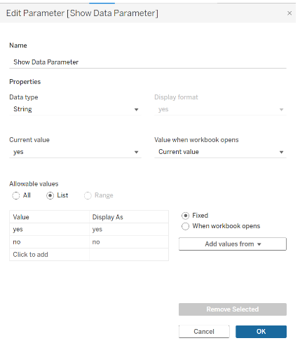
3. Create two new calculations: [Show Data X], and [Show Data Y]. The idea here is that data should only appear if the [Show Data Parameter] is set to ‘Yes’, and the calculations to achieve this are as follows:Show Data X: if [Show Data Parameter]='yes' then [X] ENDShow Data Y: if [Show Data Parameter]='yes' then [Y] END
Drag the [Show Data X] measure to the Columns shelf, and [Show Data Y] to the Rows shelf. You should now be able to toggle the [Show Data Parameter] to show and hide the data - we’re halfway there!
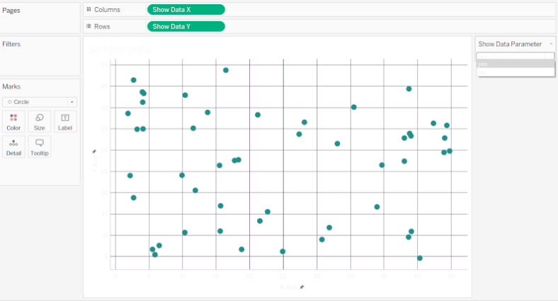
2.Now to create our switch buttons: open a new worksheet (let’s call it ‘Parameter Switch’), drag the [Show Data] dimension to the Detail pill on the Marks shelf, and change the mark type to circle. You should see two circles appear (one for ‘No’, one for ‘Yes’), which are going be our buttons3.Create a new calculation called [Switch Button Colour], as follows:if [Show Data Parameter]=[Show Data] then [Show Data]else 'Other'ENDDrag [Switch Button Colour] to the Color pill and set your colours accordingly. Be sure to toggle the parameter to ensure you set colours for ‘Yes’, ‘No’ and ‘Other’
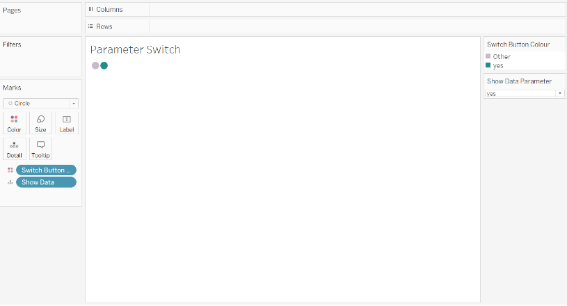
Open a new dashboard tab. For my board, I’ve created a simple background in Figma, which I bring into my board as a floating image, and position it to cover the full area of the board (I’ve used an 800x800 dashboard size in this case). I then drag and position my ‘Data’ worksheet to cover the bulk of the board. Finally, I drag my ‘Parameter Switch’ worksheet onto the board as a floating item. I remove the title, set the shading to ‘None’, and ensure the fit is set to ‘Entire View’. You’ll notice I have an oval shape next to the ‘Show Data?’ label on my background image - this is the background for the buttons, so I drag the ‘Parameter Switch’ sheet up, overlay it on that area, and resize accordingly. I ensure that within that worksheet, the colour for ‘Other’ matches that background oval so that the circle for the unselected parameter item ‘disappears’.
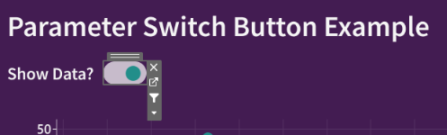
Go to the Dashboard drop-down menu and select ‘Actions’->’Add Action’->’Change Parameter’. Ensure the Source Sheet is set to your dashboard, that only ‘Parameter Switch’ is checked, and Run Action On is set to ‘Select’. In the Target Parameter dropdown, select ‘Show Data Parameter’, and in the Source Field dropdown, select ‘Show Data’. Click ok and go back to your dashboard. If you click on your ‘Parameter Switch’ buttons, you should now see the data appear/disappear accordingly
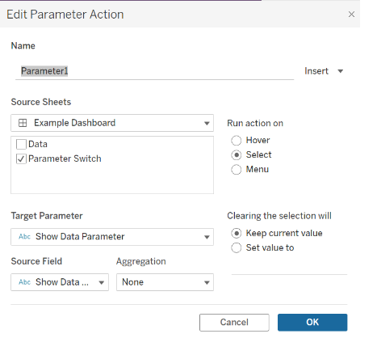
Finally, you’ll notice I have [True] and [False] calculations dragged onto Detail on the ‘Parameter Switch’ sheet. This is to power another couple of worksheet/dashboard actions that ensure the buttons don’t get highlighted when clicked on (which hampers the user experience). I learned this trick from a Luke Stanke article a few years ago, and have used it religiously ever since. With recent Tableau updates there may now be a quicker way to do this, but I’ve stuck with this extremely reliable method!CJ: Your premier league visual ‘ever presents’ really caught my eye from its ability to showcase managerial and financial impact through labels without having to add huge amounts of written detail. How did you end up landing on using a table position rank chart to best show this story?
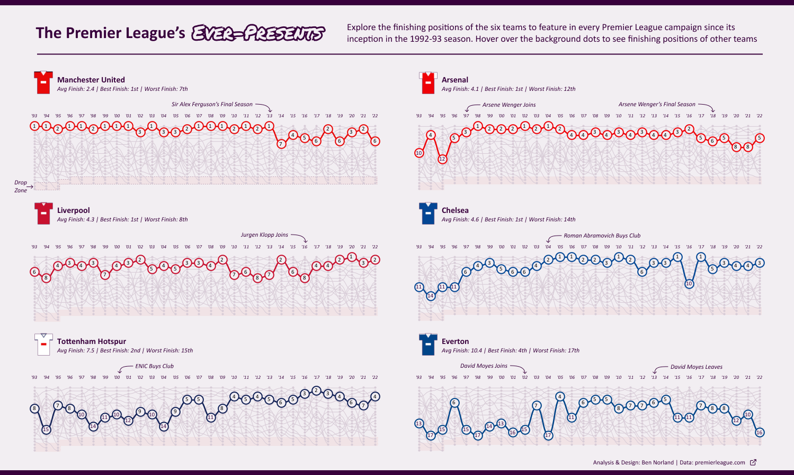
B: In all honesty, this viz was probably more complex than it needed to be! I had seen Nir Smilga produce a great background context viz, and wanted to do something similar. But I also decided to take the opportunity to try a curved bump chart. I had initially intended to show the season-by-season finishing positions of all teams to ever feature in the Premier League. But with the data densification required for both the context and the curved lines, it ended up being a huge dataset that wouldn’t render when I published to Tableau Public! So I condensed it down to only the ever-presents. It was only after the fact that I decided to add the manager/ownership labels to provide some additional context, but I think they worked out quite nicely. I like the way this chart shows progress (or, in some cases, decline) over time. From a personal perspective as a Spurs fan, it’s interesting to highlight the progression the club has made during Daniel Levy’s tenure, and the consistency we’ve achieved despite the criticism he gets. I was also pretty amazed to see that Manchester United never finished outside the top 3 under Fergie…!CJ: Sometimes I think people may skip over the technical expertise that goes into a visual creation when it is done so elegantly. I recognise some of the complexity within your player comparison dashboard with sheets such as the passing section having up to 9 layers! What thought goes into the preparation of a gauge bar with value overlays?
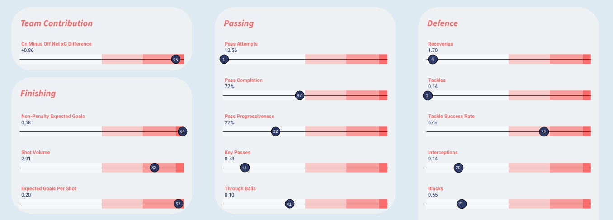
B: This viz was actually a re-make of one I did shortly after starting my Tableau journey, updated to make use of the worldfootballR data source and also applying some of my more recent learnings. Once again, map layers are at the heart of this, and the gauge bar is actually a series of polygons. Just prior to this I had used Kevin Flerlage’s excellent “Yes Polygons!” tutorial to build a viz looking at the most popular songs on Spotify from the past few decades, and so I had the idea to use that same approach to build the gauge. There are many ways to do most things in Tableau, but I found this approach solved some challenges around controlling the height/width of the gauge area (which would be harder to do with reference lines, for example), which in turn allowed me to more cleanly layer on other elements such as the metric name and absolute value, and the percentile dots.I think many experienced Tableau folks will know what I mean when I say it takes a little while to work out how Tableau “thinks”. I feel like I’m getting better at that now, and can anticipate challenges that will be thrown up when trying to build particular chart types or work with particular types of data. That was definitely true with this viz - I was able to pull this together much more quickly than the original version, even though it contains more complex elements, because I could anticipate from the outset a lot of the challenges I would face, and how I would need to present the data to Tableau to make it all fit together properly. This is actually something I would really emphasise to anyone at an early stage in their Tableau journey: it can seem intimidating and frustrating when you see people producing really complex vizzes and you’re struggling to even get it to display basic charts correctly (believe me, I’ve been there!), but those complex vizzes have been made possible by those authors going through the exact same journey you’re on now. So stick with it, make use of the brilliant resources that are out there, and you’ll be amazed at what you can achieve. And be sure to engage with the DataFam along the way - it is such a supportive and generous community.CJ: Thank you so much for finding the time to dive into some of your SportsVizSunday vizzes with me Ben. Is there anything we should be keeping our eyes peeled for the future?
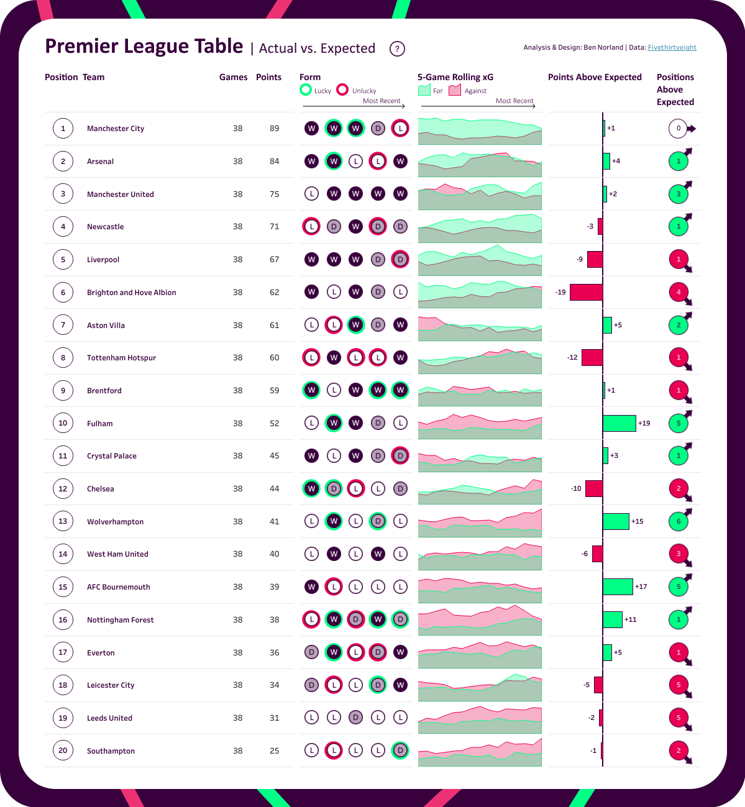
B: Not at all - thank you for inviting me! In terms of upcoming pieces, I’m back to work at the end of August, so I expect I’ll be publishing on Tableau Public a bit less frequently (I think I’ve averaged a viz every 2 weeks over the past few months), but I will definitely still be publishing regularly. I don’t tend to plan vizzes too far in advance - normally it’s a case of being inspired by the work of others, or being struck by a particular event (usually sports-related) that prompts a new idea. But I am planning to build another version of my PL Actual vs. Expected table once we’re a bit further into the new season. And I’ve just finished working on a piece at the moment looking at transfer flows between the big 5 leagues. Check it out!LOGGING OFF,CJ